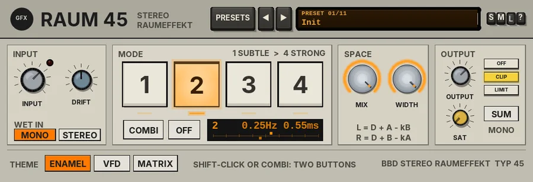

Raum 45
A four-button stereo space processor: two opposed bucket-brigade lines that widen and smooth the sound and fold back cleanly to mono.

Overview
Raum 45 is a stereo space processor in the spirit of the classic late-70s Japanese studio rack "spatial" choruses, dressed as Eastern European studio gear (it belongs with Pegel 45, Stimm 45 and Feld 45). It is not a chorus you hear wobble: the image opens out and the sound gets a little bigger and smoother, without any obvious movement.
Inside are two short bucket-brigade delay lines, about 3 ms each, with the filtering and the very gentle saturation of the real chips, and no compander, so there is no pumping or breathing. One slow LFO sweeps the two lines in opposite directions. Each line goes back to its own side and, polarity-inverted, to the other side. That matrix is the trick: in the mono sum the two wet lines almost cancel, so when the mix is folded to mono what is left is the dry signal - no comb filtering. The bass stays dry and centred too.
As on the hardware, four buttons choose fixed rate and depth pairings, from 1 (subtlest) to 4 (strongest), and two buttons can be pressed together for the combination modes. The dry signal is never touched.
Reach for it for
- Widening vocals, keys and pads without a wobble
- Doubling and thickening clean guitars
- Opening up a mono synth or a DI'd instrument
- Strings and pads that bloom without smearing the low end
- Width that survives a mono check
Controls
Drag the knobs up and down (hold Shift for fine moves); double-click to reset one. Keys light when they are on.
The header
- PRESETS
- Opens the preset list (or click the display). The list ends with Reset all to defaults, which also resets the theme and the output stage.
- ◄ / ►
- Step through the presets.
- Preset display
- Shows the preset number and name. Click it for the list.
- S / M / L
- Panel size: small, medium or large. The panel also scales to fit the plugin window.
- ?
- Opens a pop-up with the design credit, the GFX website address and the address of this manual. Click anywhere to close it.
INPUT
- INPUT
- Input trim, -24 to +12 dB (0 dB by default). The red LED lights when the input goes above -3 dBFS.
- DRIFT
- 0 - 100% (50% by default). See Drift below.
- WET IN: MONO / STEREO
- MONO (the default, as on the hardware): left and right are summed into both lines, so even a stereo source gets one even, centred space. STEREO: the left feeds one line and the right the other, so a stereo source keeps its own image.
MODE
- 1 / 2 / 3 / 4
- The four buttons, 1 SUBTLE to 4 STRONG. 1, 2 and 3 run at 0.25 Hz with a sweep of +/-0.30, 0.55 and 0.85 ms; 4 runs at 0.5 Hz with +/-1.10 ms. The wet level rises a little from 1 to 4. Click a button for that button alone; click the lit button again to switch all out (dry). Button 2 is on by default. A lamp above each key shows it is in.
- Two buttons
- Shift-click or Ctrl-click a second button (or use COMBI) to hold two in at once, as on the hardware: the rate is the average of the two and the depth a little more than either. 1+4 is the deepest-sounding of the gentle settings. Every change glides, with no pitch jump.
- COMBI
- While lit, a click adds or removes a button instead of replacing it.
- OFF
- Releases all buttons: the output is dry.
- Readout
- The mode (for example 2 or 1+4), its rate and depth, and a track with two marks, A and B, that move in opposite directions as the lines sweep.
SPACE
- MIX
- The amount of the effect, 0 - 100% (100% by default = the hardware's fixed blend; 0 = dry). The dry signal stays at full level.
- WIDTH
- The cross-feed in the matrix, 0 - 100% (100% by default = the hardware's matrix). Lower settings feed less of each line to the opposite side; at 0 each side has its own chorus line, which sounds more like an ordinary stereo chorus and no longer cancels in mono. The two formulas under the knobs show the matrix.
OUTPUT
- OUTPUT
- Output level, -24 to +12 dB.
- SAT
- The GFX band saturation on the way out: only the lows and highs are saturated (the mids stay clean), with a soft curve that loosens as the level rises. 0% by default.
- OFF / CLIP / LIMIT
- The final stage: nothing, a soft clipper just under 0 dB (the default; the CLIP key flashes red while it works), or a look-ahead limiter (3 ms latency, compensated by REAPER). The band frequencies, bias and ceiling are in the parameter list.
- MONO SUM
- The SUM key folds the output to mono, so you can hear how cleanly the effect collapses.
THEME
- ENAMEL
- Bone-grey baked enamel with amber-lit keys (the default).
- VFD
- Charcoal slate with a cold turquoise glow.
- MATRIX
- Battleship grey with chunky keys, mustard amber and green status blocks above the buttons.
The theme changes only the look, and is saved with the project.
Drift
DRIFT is the wander of the bucket-brigade clocks. Each line's clock drifts slowly on its own (the delay times move apart by up to about 2.5% at 50%), the LFO rate wanders by up to 4%, and a touch of filtered hiss, as from the real chips, rides on the wet signal (about -103 dBFS at 50%, -97 dBFS at 100%). At 0% it is perfectly steady and silent.
Presets
Presets set the mode, INPUT, MIX, WIDTH, WET IN, DRIFT, OUTPUT and MONO SUM. The theme and the output stage are left as they are.
- Init
- Button 2, full MIX and WIDTH, mono wet input.
- Vocal Air
- Button 1, the subtlest, with a little less drift.
- Keys Wide
- Button 3 with STEREO wet input, so the keyboard's own image stays.
- Bass Safe
- Button 1 at 70% MIX: width for a bass that stays solid in the middle.
- Guitar Double
- Button 4 for a strong, doubled guitar.
- 1+4 Deep
- Buttons 1 and 4 together: the deepest of the gentle settings.
- Strings Bloom
- Buttons 3 and 4 with stereo input and more drift.
- Pad Halo
- Buttons 2 and 4 with stereo input.
- Backing Vocals
- Buttons 1 and 3, 80% MIX, 85% WIDTH.
- Drum Room
- Buttons 1 and 2, gentle: 60% MIX and WIDTH.
- Mono Check
- Init with MONO SUM on, to hear the fold-down.
Tips
- Switch SUM on and off while the effect runs: the image collapses to almost exactly the dry sound, which is why this kind of processor is safe on lead parts.
- Use STEREO wet input on sources that are already stereo, such as keyboards and pads; MONO on mono sources and vocals.
- For the most natural result, try button 1 or 2 and leave MIX at 100%; reach for 4 or a combination when you want the effect to be heard.
- Lower WIDTH if you want a more obvious, classic stereo chorus character.
File: gfx-raum-45.jsfx